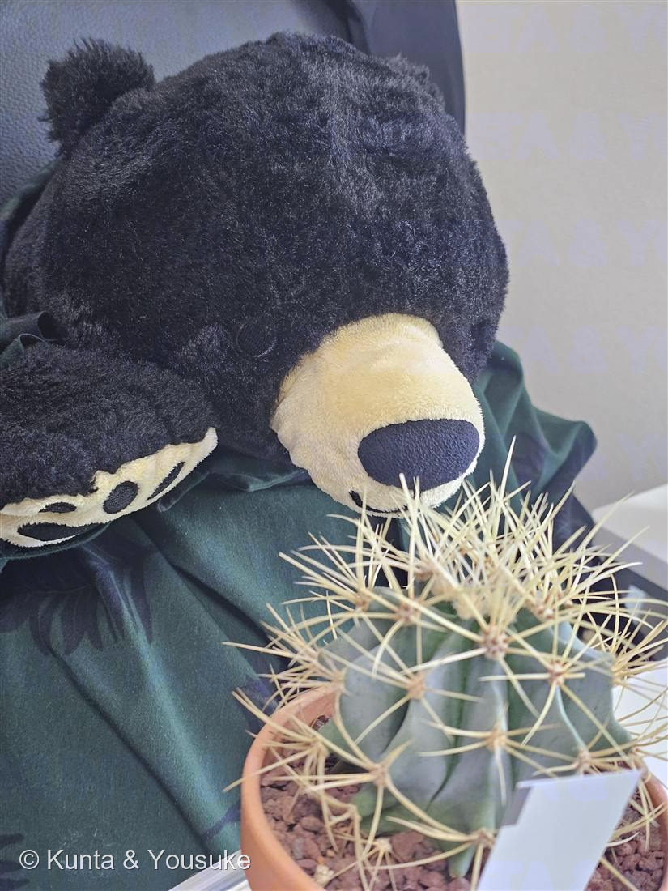
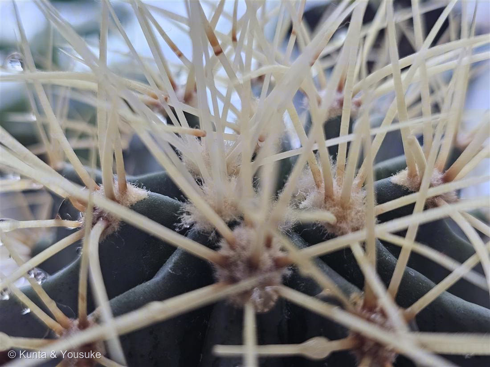

地図を読み込んでいるよ…
🔍 写真も地図も、押しているあいだ拡大して見られるよ（スマホは指を置いてすこし待ってね）。
🌍 の地図＝この子がもともと自生している場所を緑に。メキシコ。
⚠ 地図は国（日本と中国だけ県・省）までしか塗れないから、ほんとうの分布より広く見えていることがあるよ。地図はだいたいの場所。正確なところは、上の文を見てね。
王冠竜
Ferocactus glaucescens (DC.) Britton & Rose
別名 · 青王冠竜／フェロカクタス・グラウケスケンス
サボテン科 · Cactaceae（フェロカクタス属＝強刺類）
おうちの植物世話：陽介 · 星太郎さんの相棒まるっこいのに、迂闊に近づくと噛みつく
学名の由来
- Ferocactus（フェロカクタス）＝ラテン語 ferox（獰猛な・荒々しい）＋ cactus。強く鋭い刺にちなむ「猛々しいサボテン」。──燻太さんの「迂闊に近づくと噛みつく」が、そのまま属名の由来なんだ。
- glaucescens（グラウケスケンス）＝ラテン語で「青白くなる・白い粉を帯びる」。あの青緑のまるい肌の色そのもの。glaucous（ブルーム）と同語源。
- 和名王冠竜：黄金色の刺が冠のように株を飾ることから、とされる。フェロカクタス（強刺の“竜”）に、王冠。
この植物のこと
- サボテン科フェロカクタス属の球サボテン。メキシコ原産。青白い（グラウカス）肌が美しく、フェロカクタスの中でも人気種。
- 刺は黄色〜わら色で、刺座（アレオーレ）から放射状に多数。若いうちは球形、育つと径50cmほどの大きな球〜樽形になり、群生することも。頂部に黄色い花を輪のように咲かせる。
- “猛サボテン”の名のとおり刺が強い：食害から身を守る鎧であり、同時に強い日ざしをやわらげ、乾いた空気の水分をとらえる役目もある。植え替えや移動は厚手の手袋＋新聞紙で株を巻いて、そっと。
- 刺の正体は「葉」——サボテンの刺は、葉が変形したもの（spine）。刺座（アレオーレ）は枝（短枝）にあたり、そこから葉＝刺が出る。だから維管束が通っていて、引っぱっても簡単には取れない。
→ No.030 バラのトゲは皮刺（prickle）＝表皮が盛り上がっただけで維管束がなく、横に押すとポロッと取れる。サンザシの棘は枝の変形。見た目は同じ「とげ」でも、出どころが全部ちがう。この子の刺は、葉。 - 成長はとてもゆっくり。「育ってない気がする」ときも、たいていは正常。春〜秋がおもな成長期で、真夏の酷暑と真冬は休みがち。
育て方のポイント（日ざしと乾燥が好きなサボテン）
- ☀ 光
- 強い日光が大好き。一年を通してよく日に当てる（室内はいちばん明るい窓、屋外は真夏以外の直射）。光不足だと肌色が悪くなり刺も弱る。
- 💧 水やり
- 成長期（春〜秋）は土が完全に乾いて数日おいてから、たっぷり（月1〜2回が目安）。真夏の酷暑と冬は控える／ほぼ断水。過湿・停滞水は根腐れのもと。
- 🌡 温度
- 高温・乾燥を好む。耐寒はおおむね5℃前後まで。冬は室内の明るい窓辺で乾かし気味に。
- 🪴 土
- 水はけ最優先。サボテン・多肉用の培養土＋軽石／日向砂。底穴のある鉢（素焼きは通気がよく好適）。
- 🌱 肥料 ・ 安全
- 肥料は少なめ（成長期に緩効性を少量）。⚠刺が鋭いので、作業は厚手の手袋・株を新聞紙で巻いて。
※サボテン栽培の一般的な目安。うちの置き場所・季節を見ながら、二人なりに調整しよう。
【うちでは】素焼き鉢＋軽石まじりの用土で、水はけよく育てている。うちは西向きの窓にレースのカーテン越し——サボテンは強い日ざしを好むので、レースを開けて直射を当てるか、夏は屋外の日なたも◎。夏は冷房＋SwitchBotで室温22〜23℃・湿度50〜60%（乾燥を好むので、むしろ過湿に注意）。水は月1〜2回・冬は断水ぎみ。今のところ、肌のハリ・球形・てっぺんの新しい刺から、元気そう。（久しぶりの水やりのあと頂部を確認＝成長点は白い綿毛と新しい刺に覆われ、肉質は硬く引き締まり、青白いブルームも健在。しっかり成長中だった → 写真②）
参考：サボテン・多肉植物の一般的な栽培管理（強刺類フェロカクタスの育て方）をもとに整理。